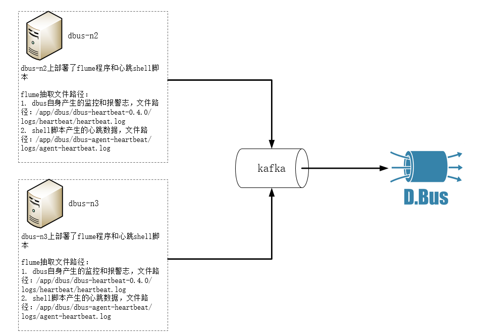

flume作为数据源接入DBus
系统架构：

总体说明：
DBus可以接入三种数据源：logstash、flume、filebeat，下面以使用flume为数据抽取端，抽取DBus自身产生的监控和报警日志数据。DBus监控和报警模块部署在 dbus-n2和dbus-n3 上，路径为：/app/dbus/dbus-heartbeat-0.4.0/logs/heartbeat/heartbeat.log。因此，flume的日志数据抽取端也要部署在dbus-n2和dbus-n3 上。
另外与logtash不同，flume需要一个额外的产生心跳数据的shell脚本，由crontab负责执行，输出的日志路径为：/app/dbus/dbus-agent-heartbeat/logs/agent-heartbeat.log，用于监测整条链路是否正常工作。因此，产生心跳数据的shell脚本也要部署在dbus-n2和dbus-n3 上。
flume抽取程序同时监控DBus自身的监控和报警日志（路径：/app/dbus/dbus-heartbeat-0.4.0/logs/heartbeat/heartbeat.log） 和shell脚本产生的心跳数据（路径：/app/dbus/dbus-agent-heartbeat/logs/agent-heartbeat.log），这样，flume既可以抽取数据日志，也可以抽取心跳日志。
| No | 域名 | 是否有监控和报警日志？ | 是否部署flume？ | 是否部署心跳shell脚本？ | 抽取日志 | 输出topic |
|---|---|---|---|---|---|---|
| 1 | dbus-n1 | 否 | 否 | 否 | 无 | 无 |
| 2 | dbus-n2 | 是 | 是 | 是 | 1.DBus自身产生的监控和报警日志 2. shell脚本产生的心跳数据 | heartbeat_log_flume |
| 3 | dbus-n3 | 是 | 是 | 是 | 1.DBus自身产生的监控和报警日志 2. shell脚本产生的心跳数据 | heartbeat_log_flume |
主要配置步骤：
1 配置 和 安装flume源相关
2 一键加线和配置
3 检验结果
1 配置和安装flume源相关
监控和报警日志在dbus-n2和dbus-n3上，因此 flume的日志数据抽取端也要部署在dbus-n2和dbus-n3 上。
1.1 flume安装
-
flume版本 DBus使用的flume的版本是v1.8.0。
-
下载
http://flume.apache.org/download.html](https://www.elastic.co/downloads/beats)
-
dbus-flume目录说明
目录结构：
dbus-flume包含检测脚本、自动配置脚本、心跳脚本以及启停脚本。

flume目录 :flume程序文件夹，用户可手动更改flume-conf.properties，也可以使用dbus的检测和部署脚本（即dbus-log-check-0.5.0文件夹）
start.sh : 启动脚本，一键启动flume程序、心跳程序等
stop.sh : 停止脚本，一键停止flume程序、心跳程序等
time_heartbeat.sh : 定时产生心跳，并将心跳日志写入dbus-agent-heartbeat文件夹中，flume会从中抽取心跳日志
log-auto-check :内部含有检测kafka连通性及自动更换flume配置的功能
readme : 使用文档说明
dbus-agent-heartbeat : 放置定时心跳脚本产生的心跳日志
1.2 log-auto-check包说明

conf : 包含log-conf.properties文件，该文件中可以对flume进行一些通用配置
checkDeploy.sh : 1）检测kafka连通性：./checkDeploy.sh
2) 自动替换flume配置：./checkDeploy.sh deploy
reports : 里面含有检测报告及对flume进行的哪些配置修改。
1.3 配置文件说明
在conf目录下，有flume的配置文件：flume-conf.properties，下面说下其配置要点。详细配置请参考flume配置文件：参考链接。
# 有两个源一个是数据源， 一个是心跳源
agent.sources=r_hb_0 r_dahb
agent.channels=c
agent.sinks=k
#1 以下为数据配置
agent.sources.r_hb_0.type=TAILDIR
agent.sources.r_hb_0.channels=c
# kafka key 为时间戳
agent.sources.r_hb_0.interceptors=i_ts i_sr_0 i_sr_1 i_sr_2
agent.sources.r_hb_0.interceptors.i_ts.type=timestamp
agent.sources.r_hb_0.interceptors.i_ts.preserveExisting=false
agent.sources.r_hb_0.interceptors.i_ts.headerName=key
# 将数据内容\,替换\\
agent.sources.r_hb_0.interceptors.i_sr_0.type=search_replace
agent.sources.r_hb_0.interceptors.i_sr_0.searchPattern=(\\\\)
agent.sources.r_hb_0.interceptors.i_sr_0.replaceString=\\\\\\\\
# 将数据内容转义,替换双引号
agent.sources.r_hb_0.interceptors.i_sr_1.type=search_replace
agent.sources.r_hb_0.interceptors.i_sr_1.searchPattern=(\")
agent.sources.r_hb_0.interceptors.i_sr_1.replaceString=\\\\\"
# 构造为json, 注意修改host部分， agent.sources.r_hb_0.interceptors.i_sr_2.replaceString中的host需要保持和心跳产生的host一致！！
agent.sources.r_hb_0.interceptors.i_sr_2.type=search_replace
#agent.sources.r_hb_0.interceptors.i_sr_2.searchPattern=^([^\{].*)
agent.sources.r_hb_0.interceptors.i_sr_2.searchPattern=(^.*$)
agent.sources.r_hb_0.interceptors.i_sr_2.replaceString={\"message\":\"$1\", \"type\":\"dbus_log\", \"host\":\"dbus-n2\"}
#sincedb 保存了读取数据源的文件的路径、inode信息及文件offset等信息。
agent.sources.r_hb_0.positionFile=/app/dbus/apache-flume-1.8.0-bin/data/flume_data/taildir/hb_0_taildir_position.json
# 被读取文件位置，如果想读取所有以.log结尾的文件，需要以.*log配置，以.log配置不生效
agent.sources.r_hb_0.filegroups=hblf
agent.sources.r_hb_0.filegroups.hblf=/app/dbus/dbus-heartbeat-0.4.0/logs/heartbeat/.*log
#2 以下为心跳源配置
agent.sources.r_dahb.type=TAILDIR
agent.sources.r_dahb.channels=c
agent.sources.r_dahb.interceptors=i_ts
agent.sources.r_dahb.interceptors.i_ts.type=timestamp
agent.sources.r_dahb.interceptors.i_ts.preserveExisting=false
agent.sources.r_dahb.interceptors.i_ts.headerName=key
agent.sources.r_dahb.positionFile=/app/dbus/apache-flume-1.8.0-bin/data/flume_data/taildir/dahb_taildir_position.json
agent.sources.r_dahb.filegroups=dahblf
#flume读取的产生心跳包的路径
agent.sources.r_dahb.filegroups.dahblf=/app/dbus/dbus-agent-heartbeat/logs/agent-heartbeat.log
agent.channels.c.type=memory
agent.channels.c.capacity=20000
agent.channels.c.transactionCapacity=20000
agent.channels.c.keep-alive=30
agent.sinks.k.channel=c
agent.sinks.k.type=org.apache.flume.sink.kafka.KafkaSink
#输出到kafka的topic
agent.sinks.k.kafka.topic=heartbeat_log_flume
agent.sinks.k.kafka.key=key
agent.sinks.k.kafka.bootstrap.servers=dbus-n1:9092,dbus-n2:9092,dbus-n3:9092
agent.sinks.k.kafka.flumeBatchSize=20
agent.sinks.k.kafka.producer.acks=1
agent.sinks.k.kafka.producer.retries=3
agent.sinks.k.kafka.producer.linger.ms=1000
agent.sinks.k.kafka.producer.batch.size=1048576
agent.sinks.k.kafka.producer.max.request.size=10485760
agent.sinks.k.kafka.producer.buffer.memory=67108864
1.4. dbus-flume启动
-
修改通用配置： 修改log-auto-check-0.5.0/conf目录下的log-conf.properties文件，对于flume，只需要修改kafka地址、日志类型及flume相关配置即可。
flume相关配置项说明：
flume.base.path： flume-conf.properties文件路径
flume.host: 运行flume的hostname
flume.data.sincedb: 存放flume记录抽取文件位置的文件路径（比如被抽取文件的inode及offset等信息）
flume.heartbeat.sincedb: 存放flume记录抽取心跳文件位置的文件路径（心跳文件的inode及offset等信息）
flume.heartbeat.file.path: 存放flume心跳文件的路径
flume.extract.file.path：flume抽取文件路径(由于flume抽取文件配置较复杂，自动配置目前仅支持单文件，对于多文件，可手动修改flume配置文件) flume.dst.topic：flume抽取日志到目的topic

-
自动检测：
执行命令：./checkDeploy.sh进入log-auto-check-0.5.0目录，执行checkDeploy.sh脚本，然后查看reports目录下的检测报告，可以查看kafka连通是否正常。
-
自动部署：
执行命令：./checkDeploy.sh deploy进入log-auto-check-0.5.0目录，执行checkDeploy.sh脚本，可以自动将conf目录下的修改项替换到flume-conf.properties文件中，可以查看reports目录下的部署报告。
-
启动方式：
执行命令：./start.sh启动脚本，该脚本会启动filebeat程序及定时心跳程序。如果没有报错，则会提示flume和心跳程序启动成功。如果有错误，会提示相应错误信息，请根据错误信息进行修改。
-
验证flume：
执行命令：ps -aux | grep flume查看filebeat进程是否存在。
-
验证心跳数据：
执行命令：ps -aux | grep timer_heartbeat查看心跳程序是否存在。
-
停止方式：
执行命令：./stop.sh停止脚本，停止filebeat及定时心跳程序。
1.3. flume启动和验证
-
进入kafka安装目录。
-
执行以下命令，查看数据，如果有数据，则说明flume可以成功抽取文件：
bin/kafka-console-consumer.sh --zookeeper dbus-n1:2181,dbus-n2:2181,dbus-n3:2181/kafka --topic heartbeat_log_flume -
flume的心跳数据样例：
{ "host": "dbus-n2", "@version": "1", "clock": 1516862401, "@timestamp": "2018-01-25 14:40:02.998", "type": "dbus-heartbeat" } -
flume抽取之后产生的数据样例：
{ "message": "[main-EventThread] INFO : 2018/01/25 16:39:32.856 WatcherType 127 - [command-control] 开始重新加载配置信息.", "type": "dbus_log", "host": "dbus-n2" } -
2 DBus 一键加线和配置
### 2.1 DBus一键加线
flume的新建线过程和filebeat的新建线过程是一样的，这里的图片引用了filebeat的建线过程，请知悉。
flume将数据抽取到Kafka topic后，DBus程序就可以对该topic数据进行处理了，在DBus web进行数据源和table的配置工作。
-
新建数据源：首先新建数据源，进入New DataLine页面，由于我们是用flume对心跳日志进行抽取，因此数据源的名字可以起的有意义一些，Type选择log_flume，topic必须和flume配置文件中的topic一致。

-
新增表：点击Add Table按钮，新增一张表，稍后会对该表进行规则配置，新增完后，点击下一步。

-
启动log_processor程序：启动storm程序，对数据进行处理，后面会对新增表进行规则配置。

启动结果：点击启动按钮后，当Status变为running后，表示启动成功，如果启动不成功，可以通过log定位失败原因。

### 2.2 数据源配置修改
因为我们在dbus-n1和dbus-n2两台机器中分别配置了flume程序，用于对数据进行抽取，而DBus监控和报警模块会对来自这两台机器的数据流进行监控，因此，我们需要在数据源配置信息中，将多台主机的host信息填入dsPartition选项中，供dbus监控和报警模块使用，注意：如果主机的hostname是ip，请将”.”转换为”_“，例如：127.0.0.1应该要转换为127_0_0_1。
- 修改数据源信息：点击modify按钮进行修改。

- 填写host信息：该数据源的数据可能来自于多个主机上的flume程序，要在dsPartition中，配置上所有主机的host信息，为DBus监控和报警模块使用。

### 2.3. 配置规则
-
进入Data Table页面，查看新增加的表，点击Rules按钮，为该表配置规则，详细配置方式请参考：

-
新增规则组：点击Add group按钮，新增一个规则组，点击规则组名字，进入规则配置页面。

-
配置规则: topic是在flume中配置的topic，即源topic，可以指定offset，获取固定区间的数据，然后点击show data按钮，此时会在页面下方显示原始数据，点击Add，新增一些过滤规则，对数据进行处理。配置完规则后，查看过滤出的数据，点击Save all rules按钮，保存规则，并返回到规则组页面。

-
升级版本：首先使规则组的Status状态变为active，然后点击升级版本（每次增加、删除或修改规则组后，都应该对该表升一次版本）。

-
**拉取增量: ** 使该表的状态变为ok，点击Take Effect生效按钮，使该表生效（当后续再对该表进行规则组配置操作后，也应该对该表再执行Take Effect生效按钮，使该表能够获取到最新的规则配置）。

-
3 grafana配置与流量监控
- **上传grafana配置文件参考链接 ： **点击Import，上传grafana json配置文件。

-
选择InDB数据库：ds的名字必须与新建数据线中的数据源名字一致。

- 之前新增表的流量监控信息，type表示来自于哪台主机的数据

- _unknown_table_表示不满足任何表的数据